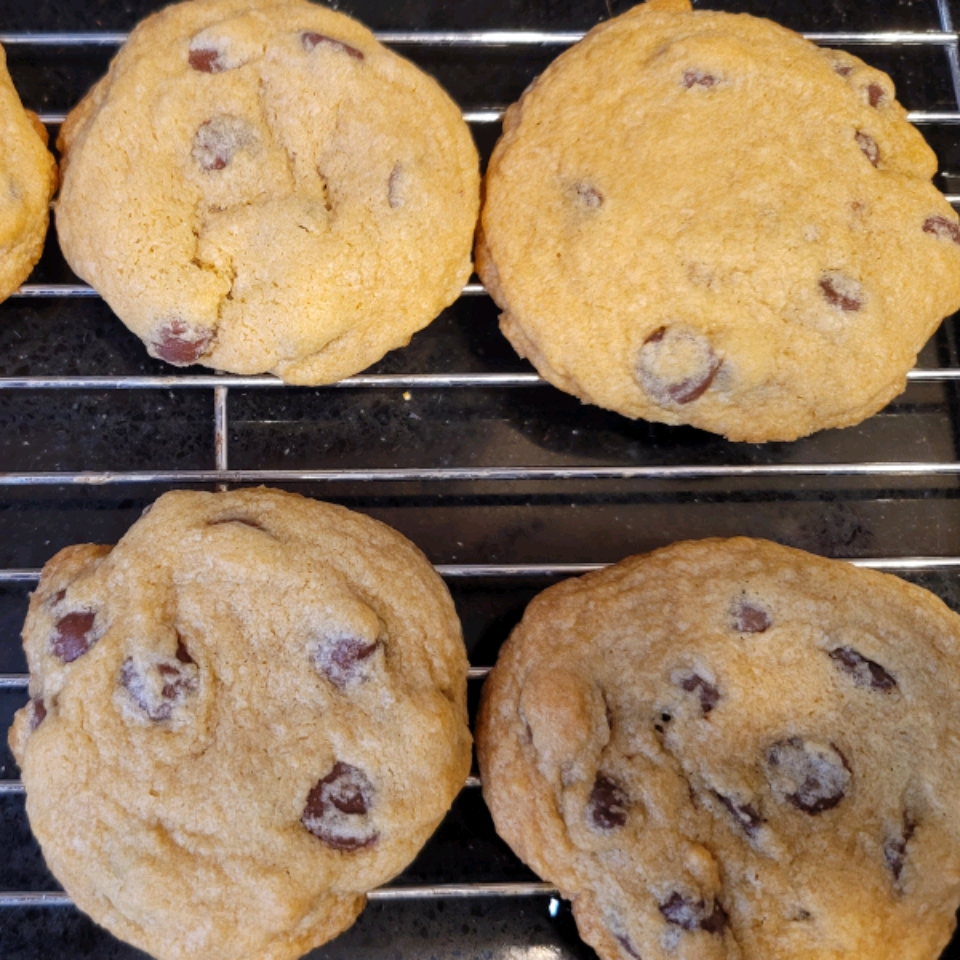

Chocolate Chip Cookies

Description
This is a recipe for chocolate chip cookies. They are normal, very normal.
Ingredients
- ½ cup butter, softened
- ¼ cup white sugar
- ⅓ cup brown sugar
- 1 egg
- ½ teaspoon vanilla extract
- 1 cup all-purpose flour
- ½ teaspoon baking soda
- 1 cup semisweet chocolate chips
- ½ cup coarsely chopped walnuts
Steps
- Preheat oven to 350 degrees F (175 degrees C).
- In a medium bowl, cream together the butter, white sugar and brown sugar until smooth.
Beat in the egg, then stir in the vanilla. Combine the flour and baking soda, stir into the creamed mixture.
Fold in the chocolate chips and walnuts.
Drop by rounded ice cream scoops onto a cookie sheet, and press down slightly to flatten.
Cookies should be about 2 inches apart.
- Bake for 11 to 14 minutes in the preheated oven.
Allow cookies to cool on baking sheet for 5 minutes before removing to a wire rack to cool completely.